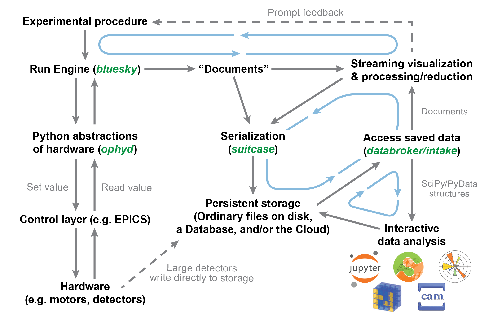
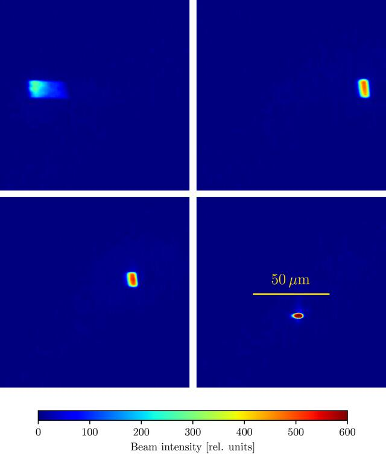
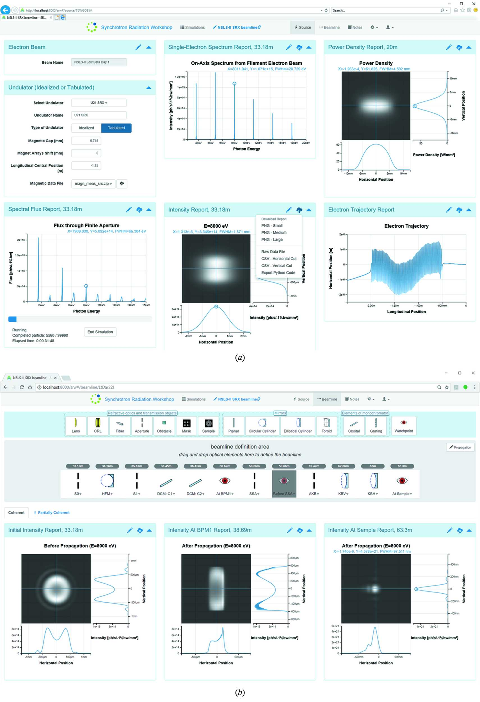
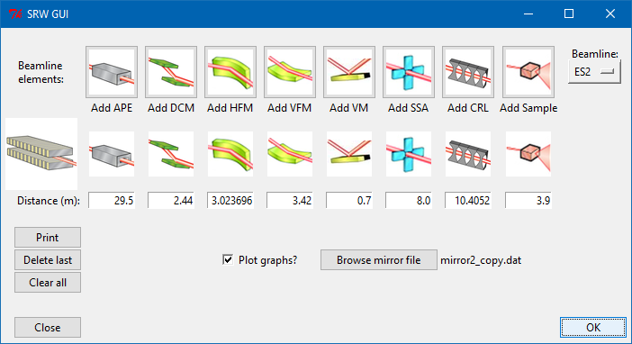
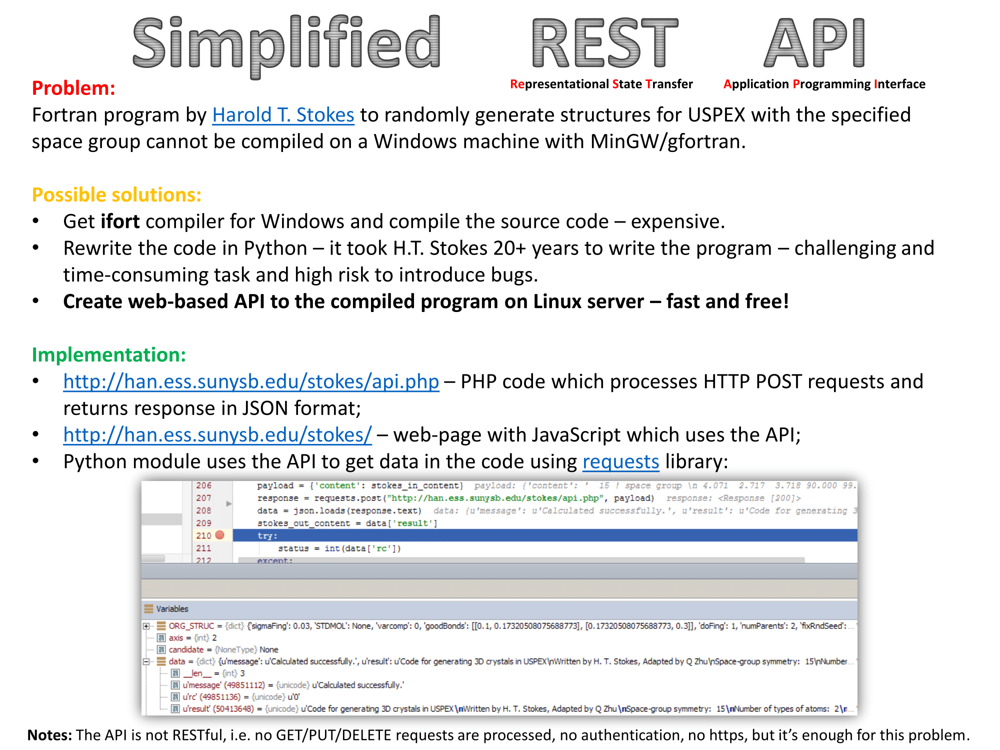
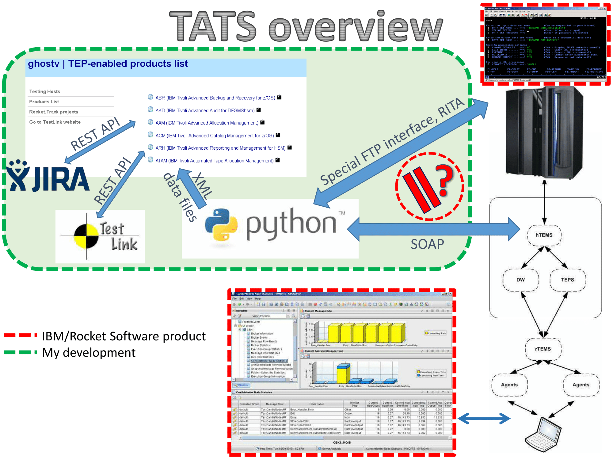

Gallery#
Affiliations#
-
Brookhaven National Laboratory
Computational Scientist / Group Leader, NSLS-II
Nov 2017 – present
-
Postdoctoral Associate (Oganov lab, Dept. of Geosciences)
Oct 2013 – Dec 2015
-
Researcher, Dept. of General and Theoretical Physics
Oct 2008 – Sep 2013
-
Applied Technologies (Rocket Software partner)
QA Engineer / System Programmer
Jun 2007 – Oct 2013
-
System Administrator, Dept. of General and Theoretical Physics
2006 – 2007
Software Projects#

Architecture overview of the Bluesky experiment orchestration ecosystem: run engine, ophyd device layer, databroker, and associated tools developed at NSLS-II. See blueskyproject.io and Allan et al., Synchrotron Radiat. News 32, 19 (2019).
Nov 2017 – present

Autonomous Beamline Alignment (BLOP)
Four beam configurations on the NSLS-II TES (8-BM) beamline: upper-left shows the initial beam; lower-right shows the optimal alignment. Six degrees of freedom (KB mirror translations/rotations and toroidal mirror pitch/translation) are tuned to maximize flux density. From Morris et al., J. Synchrotron Rad. 31, 1446 (2024).
2020 – present

Sirepo — a cloud-based web interface for X-ray source and optics simulations powered by SRW, developed at RadiaSoft / NSLS-II. Enables browser-based setup, execution, and visualization of synchrotron beamline simulations. See Rakitin et al., J. Synchrotron Rad. 25, 1877 (2018).
Dec 2015 – present

Prototype desktop GUI for Synchrotron Radiation Workshop (SRW), developed as a job-interview demo at BNL.
Jul 2015

Stokes Random-Cell Generator API
Simplified REST API for on-the-fly generation of random crystal cells, part of USPEX online utilities at Stony Brook University.
Jun 2015

TEP Automated Testing System (TATS)
End-to-end automated testing framework for the TEP mainframe emulator product at Applied Technologies / Rocket Software.
Aug 2011 – Oct 2013